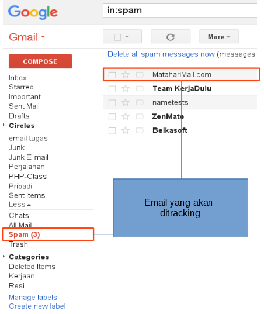
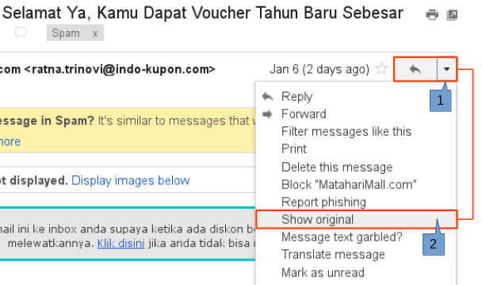
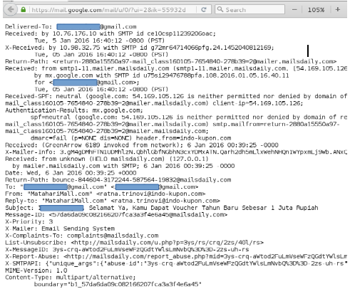
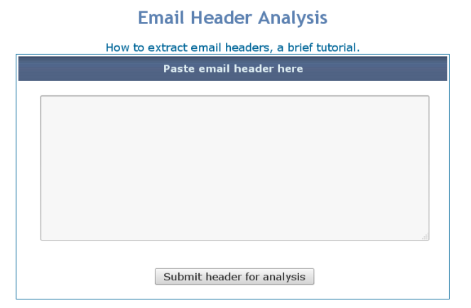
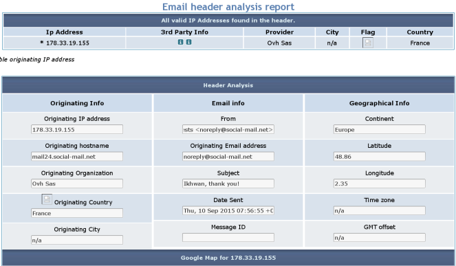

Online Email Tracking
Assalaualaikum….
Ok, kali ini kita akan membahas salah satu cara untuk melacak sebuah email yang dikirimkan ke kita dan kita tidak tau email tersebut dari mana atau mungkin kita curigai, karena dicurigai maka akan dilakukan proses tracking terhadap email tersebt, maksud email tracking disini adalah kita akan melakukan beberapa langkah untuk melacak email dari pengirim ke penerima secara online. Email Tracking sendiri merupakan metode untuk mengetahui pengiriman suatu email dari pengirim ke penerima.
Kita akan menggunakan salah satu email yang terdapat dalam akun email kita yang terdapat di spam sebagai contoh, atau email apapun bisa dijadikan contoh, karena initi dari materi kali ini adalah bagaimana menganalisa suatu email dari pengirim perjalanannya sampai ke penerima.
Berikut langkah-langkah dari mengambil contoh satu email sebagai contoh sampai langkah untuk melakukan analisis. Berikut akan diberikan screenshoot dari setiap langkah prosesnya :
Pertama,
Tentukan email yang akan dilakukan tracking. Email yang akan dijadikan contoh disini adalah email yang berada di spam,

Kedua
Melihat header dari mail tersebut, berikut cara untuk melihat header dari sebuah email. Untuk melihat header sederhananya langsung membuka email tersebut atau mengclik email untuk membukanya, berikut screenshoot dari email yang telah terbuka :

yang diberi tanda merah adalah arah yang harus diperhatikan, setelah email terbuka klik pada bagian yang diberi tanda sesuai dengan urutan yang ada pada screenshoot diatas.
Dan hasilnya adalah berikut screenshoot dari header email yang dibuka :

Setelah terbuka header dari email tersebut, langkah selanjutnya dalah mengambil header tersebut yaitu dicopy untuk dianalisa menggunakan salahsatu situs tracking email secara online.
Ketiga
Dan langkah selanjutnya adalah memilih salah satu situs yang menyediakan layanan email tracking. Contoh situs yang menyediakan email tracking secara online adalah : www.cyberforensics.in dan ada juga www.iptrackeronline.com, untuk sementara dua situs itu saja yang dijadikan contoh untuk tracking emailnya.

Berikut adalah contoh screenshoot setelah header email di paste, header email akan dipetakkan menjadi sebagaimana terlihat pada screenshoot dibawah.

Dalam contoh screenshoot diatas, adalah bagaimana situs-situs penyedia service untuk menganalisa dan mentracking email memetakan email dan memberikan laporan berupa informasi yang bisa kita analisa dari email yang kita terima.
Selesai
Informasi yang tampil cukup untuk mengetahui sumber pengirim dari email, alamat ip, hostname dari situnya, negara dimana host tersebut berada, dan masih banyak lagi yang bisa didapat informasi dari sebuah email yang ditracking, semua bergantung dari situs-situs yang menyediakan fasilitas tersebut, kerana masing-masing situs mengeluarkan format atau bentuk informasi yang berbeda meskipun secara umum informasi yang dibeerikan terdapat banyak kesamaan.
Post by: admin, @:ITS - Surabaya.